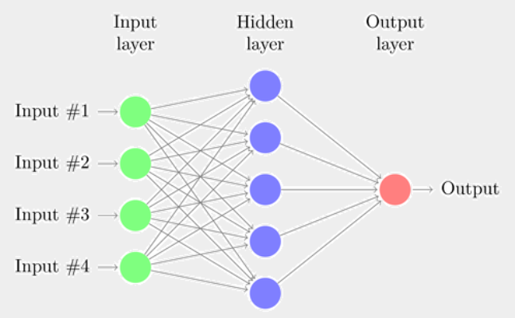
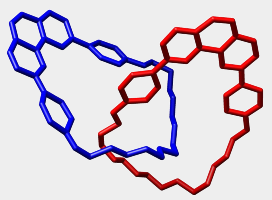
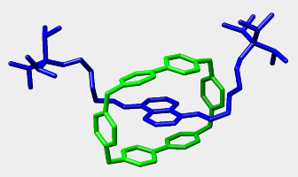
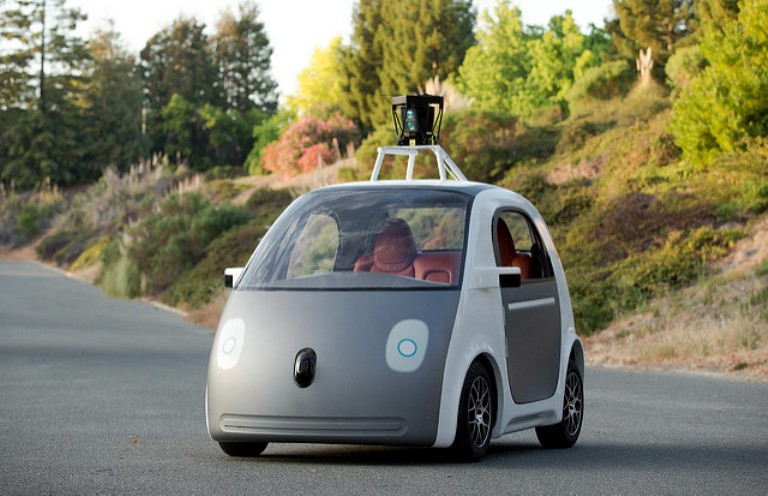
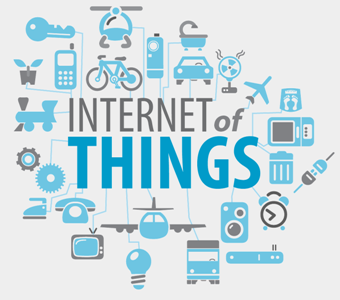

Приветствую Вас!
Мой сайт посвящён инновационным технологиям, принципам их работы, достоинствам и недостаткам.
Сайт развивается, поэтому, возможно, вам покажется, что информации мало.
Стоит заметить: вследствие особенностей браузеров Edge и Internet Explorer, некоторые модели не будут в них работать. Прошу прощения.
Я старался писать понятно для каждого. Удалось ли мне это – Вам решать. Судите строго!
Сайт сделан специально для фестиваля «Высокая технология
2017»
учеником 9 «А» класса МБОУ Гимназия им. А.
Платонова г. Воронежа
Артемием Рыжовым.
Нейронные сети
Нейронные сети
Биологические нейронные сети – это совокупность нейронов в мозге человека (да и любого другого существа с мозгом). С их помощью человек осуществляет многие процессы, связанные с информацией. Искусственные нейронные сети (далее – просто нейронные сети) - это математическая модель, которая описывает биологические нейронные сети.
Вообще, нейронные сети сложно назвать инновационной технологией. Как модель они были разработаны Уорреном Мак-Калоком и Уолтером Питтсом в далёком 1943 году. Через 15 лет, в 1958 году, Фрэнк Розенблатт изобрёл (опять же, как модель) перцептрон – одну из первых нейронных сетей. В 1974 году был изобретён, а в 1986 году переизобретён чрезвычайно важный алгоритм обратного распространения ошибки.
Т.е., по сути, теоретическая база была доработана 30 лет назад. Но, в связис малым распространением компьютеров в то время, нейронные сети стали особенно использоавться последние 15-20 лет.
Итак, что это, собственно такое? Нейронная сеть применяется для вычислений. Она состоит из отдельных слоёв, которые, в свою очередь, состоят из нейронов. У каждого нейрона может быть несколько входов (с разными весами) и один выход.
Возвращаемое нейронном значение зависит от входов и их весов, а также от смещения (bias). Если сумма входов, умноженных на веса, меньше смещения, то значение больше или равно 0.5, иначе меньше.
У нейронных сетей есть очень важная особенность – их можно обучать, т.е. изменять веса и смещения для правильного результата. Для этого часта используется алгоритм обратного распространения ошибки (backpropogation).
Есть очень много видов нейронных сетей. Среди них:
- Перцептрон
- Сети прямого распространения
- Рекуррентные сети
- Свёрточные сети
- Сети Кохонена
- Сети Хопфилда
- Автоэнкодеры
Для чего же применяются нейронные сети? В первую очередь, для распознавания образов. Также они применяются в экономике для предсказания поведения рынка. Ещё их можно использовать для эффективного поиска, перевода, определения личных качеств человека... в общем, для многих задач, связанных с обработкой информации, которые эфективно решает человек.
Ниже представлена модель простейшей нейронной сети из двух слоёв и трёх нейронов. Вы можете изменить значения, весы, смещения, а после этого посмотреть результат вычислений, нажав кнопку "Результат". Если результат близок к единице, то он положителен, если он близок к нулю, то отрицателен.
Молекулярные машины
Молекулярные машины
 
Молекулярные машины – это комплексы молекул (т.н. супрамолекулы), которые при внешнем воздействии на них совершают работу. Т.е. это аналоги макроскопических механизмов в мире отдельных молекул.
Молекулярные машины в природе существуют давно – вероятно, с появления жизни. Но человек научился синтезировать их недавно.
В 1983 году Жан-Пьер Соваж синтезировал катенан – первую молекулярную исскуственную машину. Отдельные молекулы в катенане связаны механической связью, а именно – представляют собой цепь (см. левый рисунок). Его исследования продолжил сэр Фрейзер Стоддарт, исследовавший также ротаксаны (см. правый рисунок). В 2004 году он создал молекулярный лифт. В 1999 году Бернард Феринга создал однонаправленный молекулярный ротор. Все трое в этом, 2016, году стали лауреатами Нобелевской премии по химии.
Суть работы молекулярных машин заключается в воздействии на отдельные их части. Например, молекулярный ротор начнёт свою работу при воздействии на него теплом и ультрафиолетовым излучением. Молекулярный челнок перемещается при подаче тепла. Молекулярный лифт работает в зависимости от среды.
Основные применения молекулярных машин зависят от их очевидного свойства – они не только сами движутся, но и могут передвигать другие предметы. Молекулярный лифт, например, может перемещать отдельные молекулы вверх и вниз. Поэтому, вероятно, молекулярные машины будут использовать в медицине для перемещения лекарство в определённое место, ускорения некоторых важных химических реакций. Эта тема сейчас настолько экзотическая, что сложно представить её развитие.
Нижу предствлена модель молекулярного лифта. Вы можете в выпадающем списке выбрать среду (кислую или щелочную). При кислой среде платформа поднимается на 0.7 нм, а при щелочной – опускается.
Беспилотные автомобили
Беспилотные автомобили
Беспилотные автомобили – это автомобили, которые могут передвигаться сами, без участия человека. Правда, чаще всего они снабжаются ручным управлением, но это сделано для безопасности ради дорогах.
Скорее всего, первый автономный автомобиль был создан в 1980 году под руководством Эрнста Дикманнса. Почему скорее всего? Просто сложно сформулировать критерии "беспилотности" автомобиля. Если смотрите уж очень узко, то тогда и сейчас их ещё не изобрели.
После этого во многих компаниях стали заниматься в той или иной степени автономным автомобилем. Но многим из моделей требуется присутствие человека. Вернее, всем. Пока что. Основные компании, которые исследуют беспилотные автомобили – Google, Tesla, Audi, BMW, Mersedes и другие.
Беспилотные автомобили оснащены многими датчиками: GPS, датчиками движения, радарами, множеством камер. На основании их показаний ПО машины создаёт виртуальную модель окружающей среды. При наличии некоторой преграды машина анализирует её движение. На основе данных анализа она определяет своё дальнейшее поведение. Также машины могут самообучаться, передвигаясь по реальным дорогам.
Основные преимущества беспилотных автомобилей:
- Уменьшение количества ДТП
- Уменьшение траффика
- Экономия времени водителя
- Предсказуемость поведения машины
- Большая скорость реакции аппаратуры
- Возможная ненадёжность ПО
- Аппаратные ошибки
- Возможная неопытность водителя в случае ручного управления
- Разнообразные этические вопросы
Вот моя модель. В ней серый прямоугольник – это препятствие. Возможно, столб. Зелёный кружок – это цель. Например, какой-нибудь магазин. При нажатии на цель автомобиль объезжает препятствие, т.к. оно неподвижно. Эта модель демонстрирует возможный алгоритм действия беспилотного автомобиля в данной ситуации.
Интернет вещей
Интернет вещей
Интернет вещей – это система, в которой отдельные вещи взаимодействуют друг с другом. Вещи – это не какой-то термин, а просто вещи: лампочки, двери, розетки, холодильники. И все они подключены друг к другу через Интернет или Bluetooth.
Сам термин был предложен Кевином Эштоном в 1999 году. Толком истории у этой концепции ещё нет, её просто не было, а потом как-то постепенно появилась. Точкой невозврата стал 2008 год, когда устройств, подключенных к Интернету, стало больше, чем людей. Тогда Интернет вещей окончательно появился.
Концепция Интернета вещей тесно связана с идеей умного дома. Умный дом – это комплекс устройств внутри дома, так или иначе сообщающихся между собой. Также эти устройства могут менять своё состояние в зависимости от состояния других. Пример: человек выходит из дома, у двери срабатывают датчики движения, лампочки гаснут, розетки отключаются. Хоть это и несовершенный пример (человек может не выходить, а входить; он может выйти на пару минут и т.д.), я думаю, концепция понятна.
Чаще всего внутри дома Интернет вещей (т.е. умный дом) организуется как локальная сеть с выделенным узлом. Есть сервер, он может получать и посылать запросы. Устройства посылают запрос на сервер, а сервер отправляет их другим устройствам. Но иногда устройства могут "общаться" друг с другом и без сервера. Но это уже детали реализации.
Какие же устройства образуют Интернет вещей? Вот основные из них (ко всем можно прибавить "умные"):
- Лампочки
- Телевизоры
- Розетки
- Замки
- Мультиварки
- Холодильники
- Кастрюли
- Сковородки
- Кофеварки
- И много всего другого
Главное достоинство умных вещей – упрощение жизни людям. Но есть у них и недостатки. Главные – несовершенство электросети и ПО и, разумеется, приватность. Да и вообще, иногда вещи ведут себя странно. Например, есть умная розетка, которая иногда посылает SMS владельцу.
А теперь небольшая модель. У нас есть телефон (прямоугольник). Он играет роль сервера. У нас есть лампочка. Она выключена. Если щёлкнуть по телефону, то он отправит запрос (синяя линия), и лампочка включится.